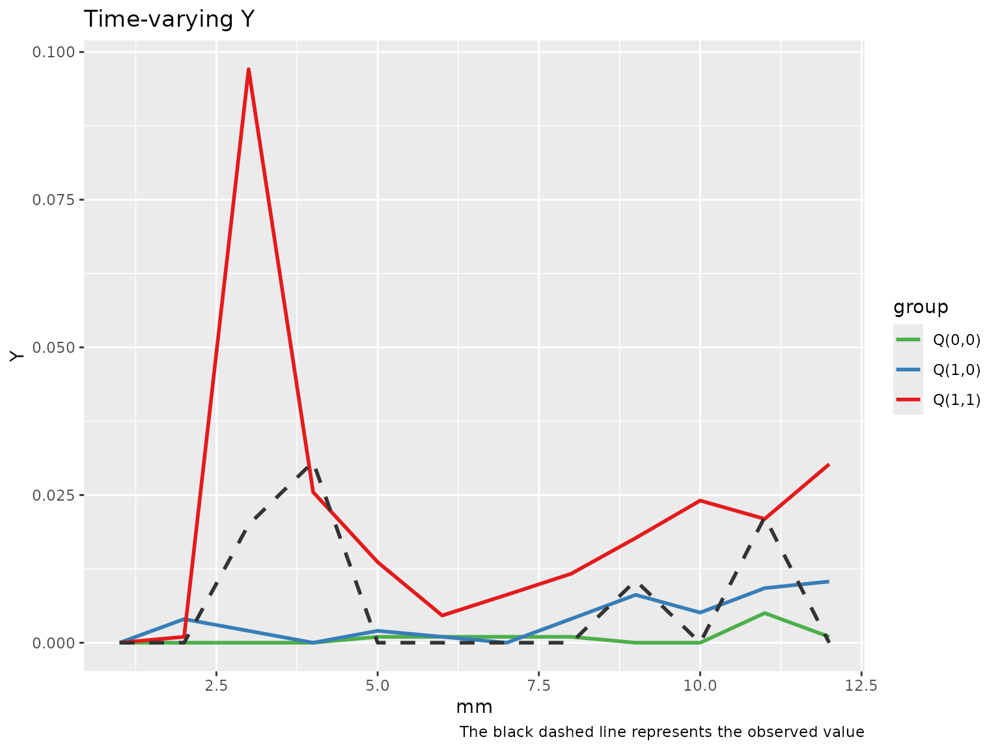
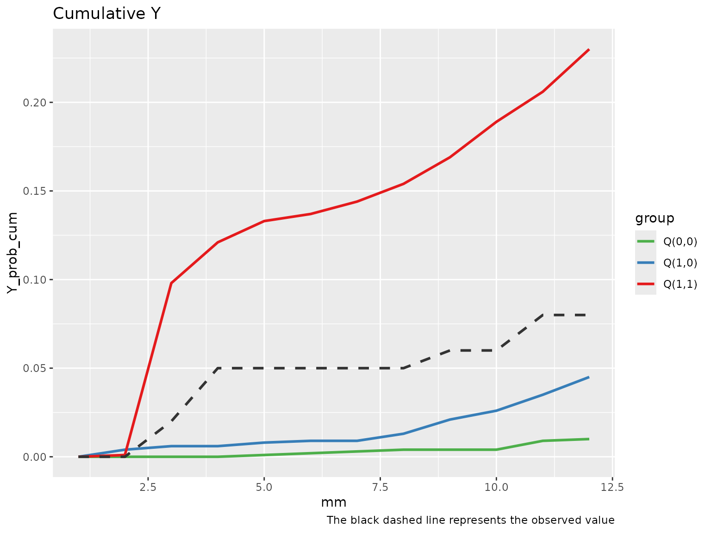

Time-varying Mediation Analysis with Binary Exposure and Single Mediator
Source:vignettes/single_mediator.Rmd
single_mediator.RmdThis example illustrates how to use tvmedg() function to
conduct time-varying mediation analysis with binary exposure, single
binary mediator, and binary outcome. We will use simulated
monthly longitudinal data, where each row represents
one month of follow-up per individual. The dataset includes the
following variables:
Exposure:
Mediator:
Outcome:
Time-varying confounders: binary, and continuous
Time-fixed confounders:
age,sex,ow, andriskTime index:
mm, indicating the month of follow-up
Since, g-computation is computationally intensive, we will leverage
parallel computing using the foreach and
doParallel packages to improve efficiency
library(tvmedg)
head(sim_data)
#> id mm Ap Mp L1 L2 L3 Yp age sex ow risk lastid
#> 1 1 1 0 0 0 100.0000 80.00000 0 16.52949 0 0 0 0
#> 2 1 2 0 0 0 125.1296 102.02885 0 16.52949 0 0 0 0
#> 3 1 3 0 0 0 116.4990 98.99688 0 16.52949 0 0 0 0
#> 4 1 4 0 0 0 131.9247 104.07117 0 16.52949 0 0 0 0
#> 5 1 5 0 0 0 109.5959 103.24813 0 16.52949 0 0 0 0
#> 6 1 6 0 0 0 124.2403 95.82793 0 16.52949 0 0 0 0Point estimates
First example is when the mediator precedes the time-varying confounders (). This corresponds to the following DAG

DAG for the context that mediator precedes the time-varying confounders
To specify the causal ordering
,
set the argument tvar_to_med = FALSE (the default). In
contrast, if the time-varying confounder is assumed to precede the
mediator
(),
use tvar_to_med = TRUE.
The current version of tvmedg supports lag-based
functional forms for variable histories. In this example, we
specify 2 lags. By default, logistic regression is used for binary
variables, and linear regression is used for continuous variables. For
continuous variables and time indices, spline-based
models can be used by specifying: sp_list,
sp_type, and sp_df. This example sets a cubic
spline with 3 degrees of freedom for the month variable mm.
Additional variables, spline types (e.g., “ns”), and df can be added to
these arguments to model nonlinear effects. Lastly, we run the algorithm
using 1000 Monte Carlo samples.
library(doParallel)
#> Loading required package: foreach
#> Loading required package: iterators
#> Loading required package: parallel
cl <- makeCluster(2)
registerDoParallel(cl)
med_MtoL <- tvmedg(data = sim_data,
basec = c("age","sex","ow","risk"),
expo = c("Ap"),
med = c("Mp"),
tvar = c("L1","L2","L3"),
outc = c("Yp"),
time = c("mm"),
lag = 2,
tvar_to_med = F,
cont_exp = F,
mreg = "binomial",
lreg = c("binomial","gaussian","gaussian"),
yreg = "binomial",
sp_list = c("mm"),
sp_type = c("bs"),
sp_df = c(3),
followup = 12,
seed = 123,
montecarlo = 10,
boot = F,
parallel = TRUE)
#> Q(a,a): 0.2
#> Q(a,a*): 0.1
#> Q(a*,a*): 0
#> Indirect (rIE): 0.1
#> Direct (rDE): 0.1
#> Total (rTE): 0.2
#> Proportional explain: 0.5
#> Total time elapsed: 5.373425 secs
stopCluster(cl)Confidence interval
tvmedg implements non-parametric
bootstrap to obtain confidence intervals for effect estimates.
This can be enabled by setting boot = TRUE, along with
specifying the number of bootstrap samples via nboot, and
the desired confidence level ci (e.g.,
ci = 0.95).
For illustration purposes, and to reduce computational burden in this example, we run only 5 bootstrap iterations.
cl <- makeCluster(2)
registerDoParallel(cl)
med_MtoL_ci <- tvmedg(data = sim_data,
basec = c("age","sex","ow","risk"),
expo = c("Ap"),
med = c("Mp"),
tvar = c("L1","L2","L3"),
outc = c("Yp"),
time = c("mm"),
lag = 2,
tvar_to_med = F,
cont_exp = F,
mreg = "binomial",
lreg = c("binomial","gaussian","gaussian"),
yreg = "binomial",
sp_list = c("mm"),
sp_type = c("bs"),
sp_df = c(3),
followup = 12,
seed = 123,
montecarlo = 10,
boot = T,
nboot = 5,
ci = .95,
parallel = TRUE)
#> Q(a,a): 0.8 (0.06, 1)
#> Q(a,a*): 0.7 (0.01, 1)
#> Q(a*,a*): 0 (0, 0.55)
#> Indirect (rIE): 0.1 (0, 0.64)
#> Direct (rDE): 0.7 (-0.54, 1)
#> Total (rTE): 0.8 (-0.48, 1)
#> Proportional explain: 0.125 (0, 0.917)
#> Total time elapsed: 20.62866 secs
stopCluster(cl)Validation
Diagnostic tools for checking the g-computation algorithm are limited. However, we should expect the observed outcome trajectory to lie between the predicted values of , , and over time.
To aid in this evaluation, tvmedg provides two
diagnostic plots:
A plot comparing the observed outcome with the simulated outcomes under the three exposure–mediator scenarios across time.
A plot of the cumulative outcomes over time under each scenario.
Time-varying plot
plot(med_MtoL, "tvY")
Cumulative plot
plot(med_MtoL, "cumY")